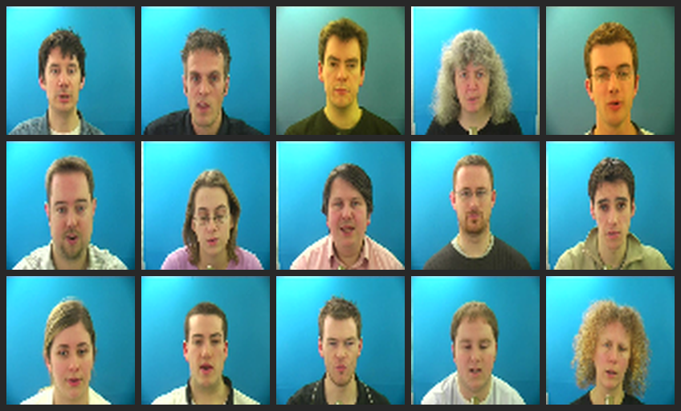
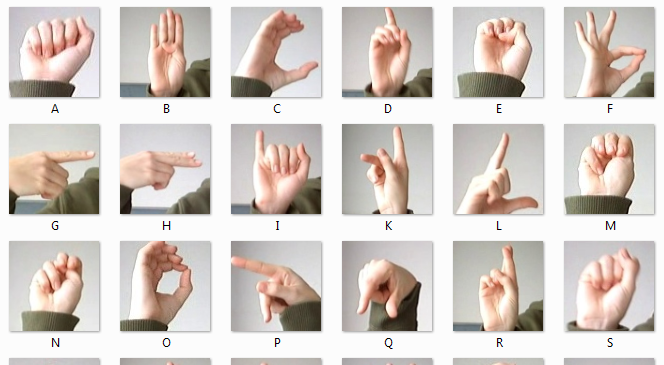
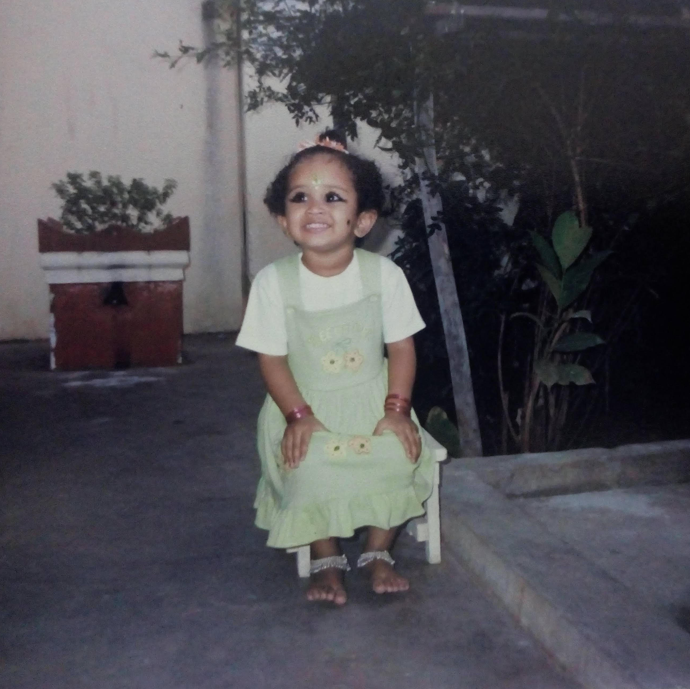

Machine Learning Engineer
Hello, I am a Machine Learning Engineer at the Mood Disorders Society of Canada, where I build MIRA — a conversational AI assistant for mental health support and personalized resource recommendations. I completed my MSc in Computing Science at the University of Alberta, advised by Dr. Osmar Zaiane, affiliated with Amii. You can read my thesis here.
RAG-based mental health assistant using transformer embeddings and knowledge graphs for context-aware resource recommendations. Outstanding Paper Award, ICDEc 2025.

End-to-end audio-visual speech recognition in PyTorch using a ResNet-18 lip encoder, mel-spectrogram CNN, gated multimodal fusion, and CTC-trained BiGRU decoder.

Published chapter surveying deep learning approaches in Automatic Sign Language Recognition. Chapman and Hall/CRC, 2020.
Silent speech recognition system using 3D CNNs to align lip-reading images with EMG signal phonemes. Cognitive Systems Lab, University of Bremen.

Grew up in Chennai
The beach, the relentless sun, and the lovely people make it an unforgettable part of my childhood.
VIT, Vellore
My engineering degree broadened my horizons and took me to new and exciting places. I'm lucky to have met smart and creative friends who continue to inspire me.
University of Bremen
It was exciting to be exposed to all the interesting research at the Cognitive Systems Lab, led by Dr. Tanja Schultz. I couldn't have wished for a better start. I'm grateful to Dr. Lorenz Diener for mentoring me.
One Fourth Labs, IIT Madras
I curated programming assignments for an online deep learning course. This project found its roots at the IIT Madras Research Park, led by Mitesh Khapra and Pratyush Kumar.
University of Alberta
I completed my Master’s in Computing Science at the University of Alberta, where I had the opportunity to work with Dr. Osmar Zaiane, who introduced me to the MIRA project and Mood Disorders Society of Canada. I’m deeply grateful for his mentorship, generosity, and the many opportunities to learn along the way.
Mood Disorders Society of Canada
My time at the Mood Disorders Society of Canada centered on evolving MIRA from a rule-based chatbot into a more adaptive, LLM-powered system. I’m grateful for the mentorship and collaboration that shaped both the work and my growth.